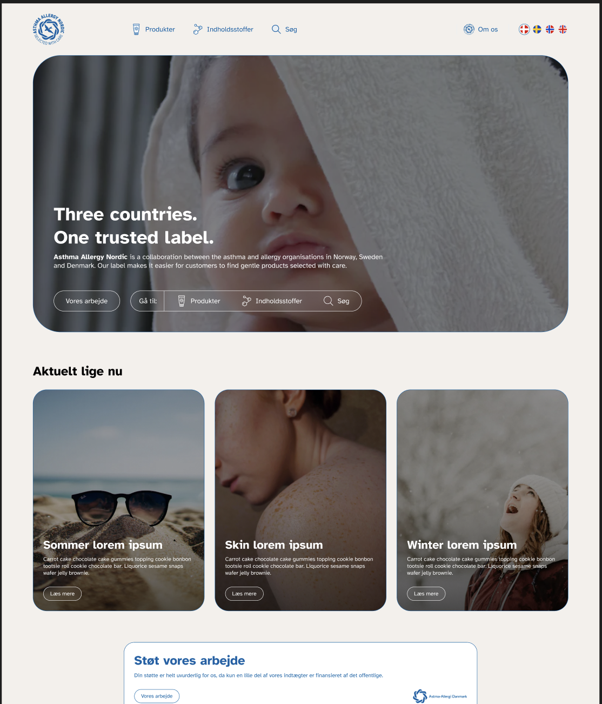
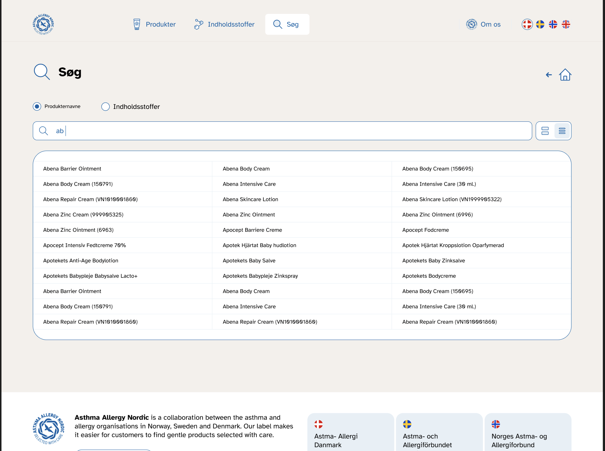
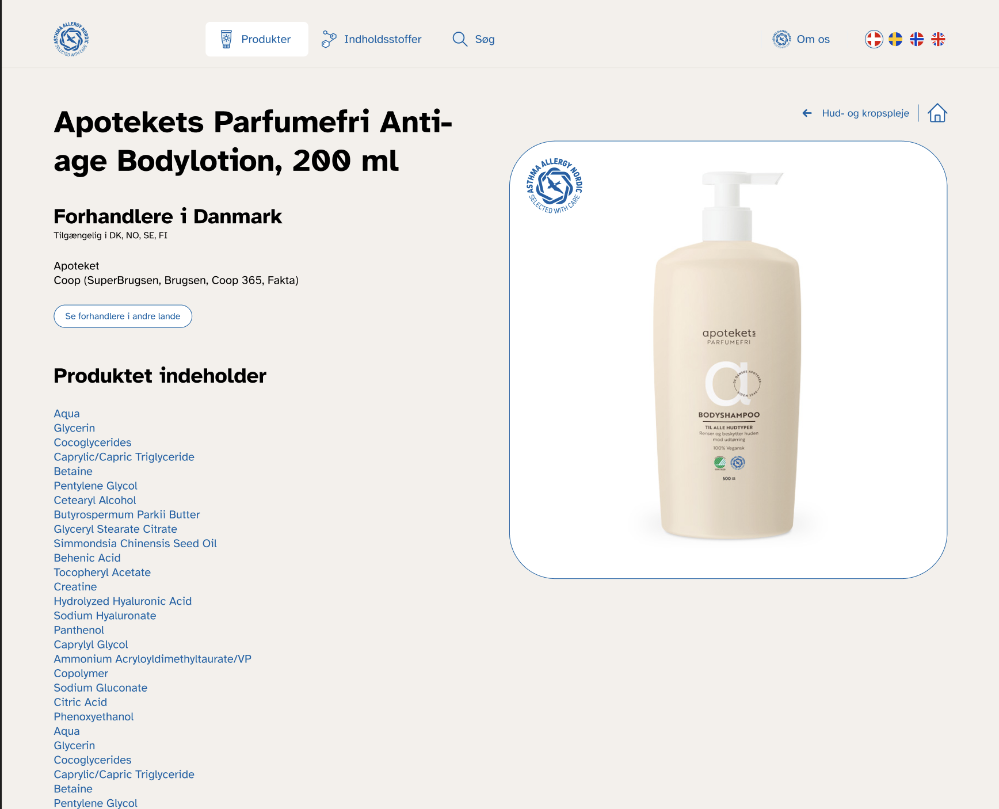
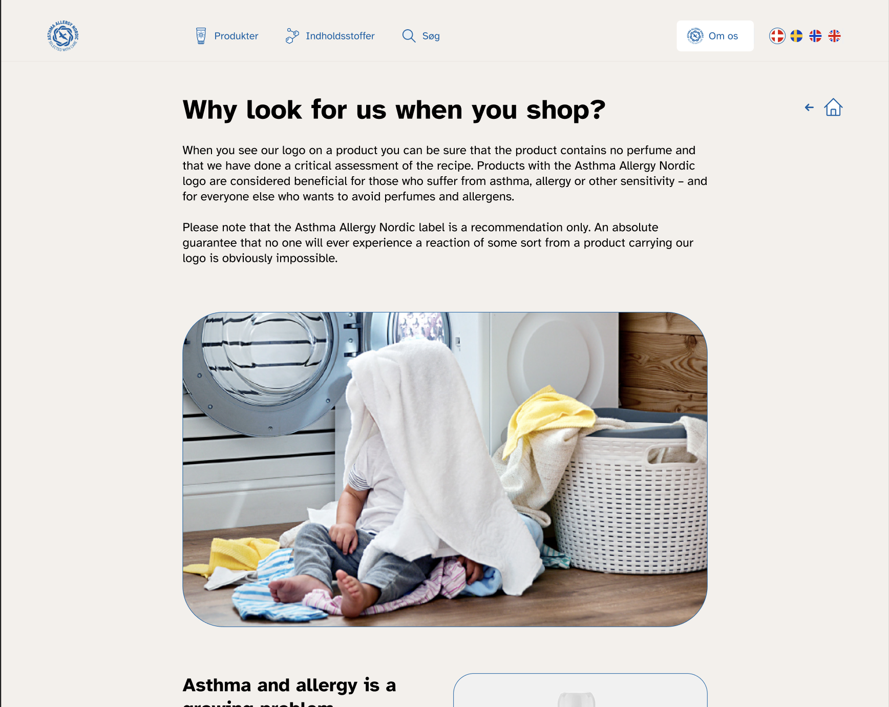

Astma Allergi
Mærkning




Tech-stack
NextJS
Tailwind
TypeScript
Vercel
Next-intl
Tailwind
DatoCMS
NextJS
Fullstack Meta-framework baseret på React
Hvad kan det / Hvorfor?
Caching, SSG, SRR
De endpoints vi fik udstillet af 3. part var alt for tunge
(eks 0.8mb og 1mb) og for langsomme
Med Next kunne vi cache requests på serveren
(vi cacher 2 uger)
Og så spørge ind i cachen hvis vi skulle have et subset af data